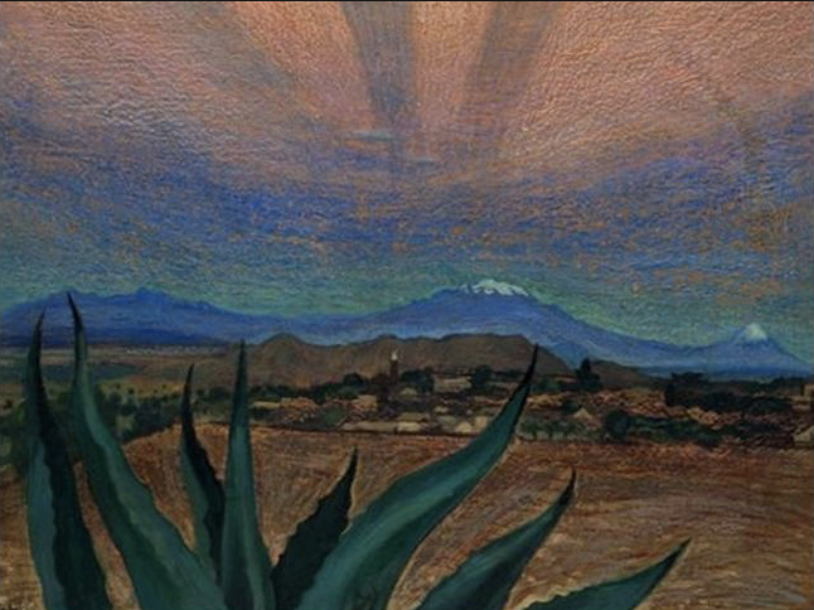
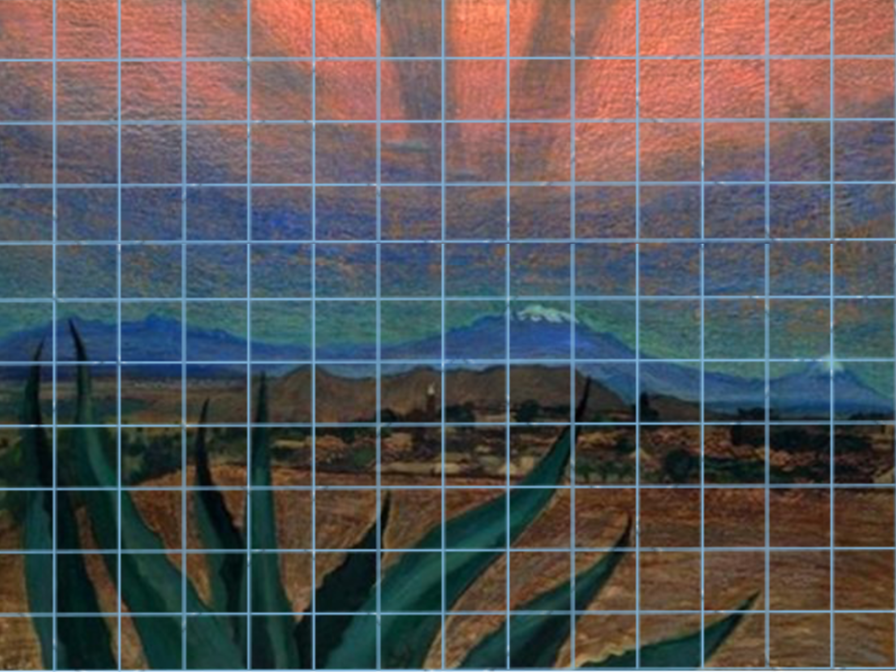

Artist: Dr. Atl (Gerardo Murillo) (Mexican, 1875–1964) Title: Atardecer
NotAtardecer, like most of my other work for class is a rip off of the real thing. 'Atardecer' meaning 'sunset' is a painting done by Mexican painter Gerardo Murillo Cornado, also known by his signature "Dr. Atl". I was attracted to the warm tones that helped characterize a mood for this work and its perception of distance.
 